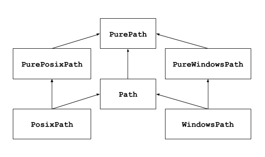

pathlib --- オブジェクト指向のファイルシステムパス¶
Added in version 3.4.
ソースコード: Lib/pathlib/
このモジュールはファイルシステムのパスを表すクラスを提供していて、様々なオペレーティングシステムについての適切な意味論をそれらのクラスに持たせています。 Path クラスは 純粋パス と 具象パス からなります。 純粋パスは I/O を伴わない純粋な計算操作を提供します。 具象パスは純粋パスを継承していますが、 I/O 操作も提供しています。

あなたが今までこのモジュールを使用したことがない場合や、タスクに適しているのがどのクラスかわからない場合は、 Path はきっとあなたに必要なものでしょう。
Path はコードが実行されているプラットフォーム用の 具象パス のインスタンスを作成します。
純粋パスは、以下のようないくつかの特殊なケースで有用です:
Unix マシン上で Windows のパスを扱いたいとき (またはその逆)。Unix 上で実行しているときに
WindowsPathのインスタンスを作成することはできませんが、PureWindowsPathなら可能になります。実際に OS にアクセスすることなしにパスを操作するだけのコードを確認したいとき。この場合、純粋クラスのインスタンスを一つ作成すれば、それが OS にアクセスすることはないので便利です。
参考
PEP 428: The pathlib module -- オブジェクト指向のファイルシステムパス。
参考
文字列による低水準のパス操作の場合は os.path も使用できます。
基本的な使い方¶
メインクラスをインポートします:
>>> from pathlib import Path
サブディレクトリの一覧を取得します:
>>> p = Path('.')
>>> [x for x in p.iterdir() if x.is_dir()]
[PosixPath('.hg'), PosixPath('docs'), PosixPath('dist'),
PosixPath('__pycache__'), PosixPath('build')]
このディレクトリツリー内の Python ソースファイルの一覧を取得します:
>>> list(p.glob('**/*.py'))
[PosixPath('test_pathlib.py'), PosixPath('setup.py'),
PosixPath('pathlib.py'), PosixPath('docs/conf.py'),
PosixPath('build/lib/pathlib.py')]
ディレクトリツリー内を移動します:
>>> p = Path('/etc')
>>> q = p / 'init.d' / 'reboot'
>>> q
PosixPath('/etc/init.d/reboot')
>>> q.resolve()
PosixPath('/etc/rc.d/init.d/halt')
パスのプロパティを問い合わせます:
>>> q.exists()
True
>>> q.is_dir()
False
ファイルを開きます:
>>> with q.open() as f: f.readline()
...
'#!/bin/bash\n'
例外¶
- exception pathlib.UnsupportedOperation¶
NotImplementedErrorを継承した例外です。パスオブジェクトがサポートしていない操作を行おうとした時に送出されます。Added in version 3.13.
純粋パス¶
純粋パスオブジェクトは実際にファイルシステムにアクセスしないパス操作処理を提供します。これらのクラスにアクセスするには 3 つの方法があり、それらを フレーバー と呼んでいます:
- class pathlib.PurePath(*pathsegments)¶
システムのパスのフレーバーを表すジェネリッククラスです (インスタンスを作成することで
PurePosixPathまたはPureWindowsPathのどちらかが作成されます):>>> PurePath('setup.py') # Running on a Unix machine PurePosixPath('setup.py')
pathsegments の各要素は、パスの構成要素を表す文字列か、パスオブジェクトなどの、
os.PathLikeインターフェースを実装するオブジェクトである必要があります。os.PathLikeインターフェースでは、__fspath__()メソッドが文字列を返します:>>> PurePath('foo', 'some/path', 'bar') PurePosixPath('foo/some/path/bar') >>> PurePath(Path('foo'), Path('bar')) PurePosixPath('foo/bar')
pathsegments が空のとき、現在のディレクトリとみなされます:
>>> PurePath() PurePosixPath('.')
あるパス構成要素が絶対パスである場合、それより前の要素はすべて無視されます (
os.path.join()と同様):>>> PurePath('/etc', '/usr', 'lib64') PurePosixPath('/usr/lib64') >>> PureWindowsPath('c:/Windows', 'd:bar') PureWindowsPath('d:bar')
Windowsの場合、ルート相対パス (例えば
r'\foo') があってもドライブ名はそのまま変わりません:>>> PureWindowsPath('c:/Windows', '/Program Files') PureWindowsPath('c:/Program Files')
単一スラッシュと等価な複数スラッシュやシングルドットは簡略化されますが、ダブルドット (
'..') や先頭に位置するダブルスラッシュ ('//') は簡略化されません。 これは、様々な理由でパスの意味が簡略化した場合と異なってしまうからです (例: シンボリックリンク、UNCパス):>>> PurePath('foo//bar') PurePosixPath('foo/bar') >>> PurePath('//foo/bar') PurePosixPath('//foo/bar') >>> PurePath('foo/./bar') PurePosixPath('foo/bar') >>> PurePath('foo/../bar') PurePosixPath('foo/../bar')
(通常
PurePosixPath('foo/../bar')はPurePosixPath('bar')と等価になりますが、fooが他のディレクトリへのシンボリックリンクの場合は等価になりません)純粋パスオブジェクトは
os.PathLikeインターフェースを実装しており、そのインターフェースを受理する箇所ならどこでも使用することができます。バージョン 3.6 で変更:
os.PathLikeインターフェースがサポートされました。
- class pathlib.PurePosixPath(*pathsegments)¶
PurePathのサブクラスです。このパスフレーバーは非 Windows パスを表します:>>> PurePosixPath('/etc/hosts') PurePosixPath('/etc/hosts')
pathsegments の指定は
PurePathと同じです。
- class pathlib.PureWindowsPath(*pathsegments)¶
PurePathのサブクラスです。このパスフレーバー UNC paths を含む Windows ファイルシステムパスを表します:>>> PureWindowsPath('c:/', 'Users', 'Ximénez') PureWindowsPath('c:/Users/Ximénez') >>> PureWindowsPath('//server/share/file') PureWindowsPath('//server/share/file')
pathsegments の指定は
PurePathと同じです。
これらクラスはあらゆるシステムコールを行わないため、起動しているシステムにかかわらずインスタンスを作成できます。
全般的な性質¶
パスオブジェクトはイミュータブルで ハッシュ可能 です。同じフレーバーのパスオブジェクトは比較ならびに順序付け可能です。これらのプロパティは、フレーバーのケースフォールディング (訳注: 比較のために正規化すること、例えば全て大文字にする) のセマンティクスに従います。
>>> PurePosixPath('foo') == PurePosixPath('FOO')
False
>>> PureWindowsPath('foo') == PureWindowsPath('FOO')
True
>>> PureWindowsPath('FOO') in { PureWindowsPath('foo') }
True
>>> PureWindowsPath('C:') < PureWindowsPath('d:')
True
異なるフレーバーのパスオブジェクト同士の比較は等価になることはなく、順序付けもできません:
>>> PureWindowsPath('foo') == PurePosixPath('foo')
False
>>> PureWindowsPath('foo') < PurePosixPath('foo')
Traceback (most recent call last):
File "<stdin>", line 1, in <module>
TypeError: '<' not supported between instances of 'PureWindowsPath' and 'PurePosixPath'
演算子¶
スラッシュ演算子を使って、 os.path.join() のように子パスを作成することができます。
スラッシュの右側が絶対パスである場合、左側のパスは無視されます。
Windows環境で、右側のパスがルート相対パス (例: r'\foo') である場合、ドライブ名はリセットされません:
>>> p = PurePath('/etc')
>>> p
PurePosixPath('/etc')
>>> p / 'init.d' / 'apache2'
PurePosixPath('/etc/init.d/apache2')
>>> q = PurePath('bin')
>>> '/usr' / q
PurePosixPath('/usr/bin')
>>> p / '/an_absolute_path'
PurePosixPath('/an_absolute_path')
>>> PureWindowsPath('c:/Windows', '/Program Files')
PureWindowsPath('c:/Program Files')
os.PathLike を実装したオブジェクトが受理できる箇所ならどこでも、パスオブジェクトが使用できます:
>>> import os
>>> p = PurePath('/etc')
>>> os.fspath(p)
'/etc'
パスオブジェクトの文字列表現はそのシステム自身の Raw ファイルシステムパス (ネイティブの形式、例えば Windows では区切り文字がバックスラッシュ) になり、文字列としてファイルパスを取るあらゆる関数に渡すことができます:
>>> p = PurePath('/etc')
>>> str(p)
'/etc'
>>> p = PureWindowsPath('c:/Program Files')
>>> str(p)
'c:\\Program Files'
同様に、パスオブジェクトを bytes で呼び出すと、Raw ファイルシステムパスを os.fsencode() でエンコードされたバイト列オブジェクトで返します:
>>> bytes(p)
b'/etc'
注釈
bytes での呼び出しは Unix 上での使用のみ推奨します。Windows では Unicode 形式が標準的なファイルシステムパス表現になります。
個別の構成要素へのアクセス¶
パスの個別の "構成要素" へアクセスするには、以下のプロパティを使用します:
- PurePath.parts¶
パスのさまざまな構成要素へのアクセス手段を提供するタプルになります:
>>> p = PurePath('/usr/bin/python3') >>> p.parts ('/', 'usr', 'bin', 'python3') >>> p = PureWindowsPath('c:/Program Files/PSF') >>> p.parts ('c:\\', 'Program Files', 'PSF')
(ドライブ名とローカルルートは単一要素にまとめられます)
メソッドとプロパティ¶
純粋パスは以下のメソッドとプロパティを提供します:
- PurePath.drive¶
ドライブ文字または名前を表す文字列があればそれになります:
>>> PureWindowsPath('c:/Program Files/').drive 'c:' >>> PureWindowsPath('/Program Files/').drive '' >>> PurePosixPath('/etc').drive ''
UNC 共有名もドライブとみなされます:
>>> PureWindowsPath('//host/share/foo.txt').drive '\\\\host\\share'
- PurePath.root¶
ローカルまたはグローバルルートを表す文字列があればそれになります:
>>> PureWindowsPath('c:/Program Files/').root '\\' >>> PureWindowsPath('c:Program Files/').root '' >>> PurePosixPath('/etc').root '/'
UNC 共有名は常にルートを持ちます:
>>> PureWindowsPath('//host/share').root '\\'
PurePosixPathでパスの先頭が３つ以上の連続したスラッシュである場合、 余分なスラッシュは除去されます:>>> PurePosixPath('//etc').root '//' >>> PurePosixPath('///etc').root '/' >>> PurePosixPath('////etc').root '/'
注釈
この挙動は、以下に示す、 The Open Group Base Specifications Issue 6 の 4.11 Pathname Resolution に沿ったものです:
"A pathname that begins with two successive slashes may be interpreted in an implementation-defined manner, although more than two leading slashes shall be treated as a single slash."
- PurePath.anchor¶
ドライブとルートを結合した文字列になります:
>>> PureWindowsPath('c:/Program Files/').anchor 'c:\\' >>> PureWindowsPath('c:Program Files/').anchor 'c:' >>> PurePosixPath('/etc').anchor '/' >>> PureWindowsPath('//host/share').anchor '\\\\host\\share\\'
- PurePath.parents¶
パスの論理的な上位パスにアクセスできるイミュータブルなシーケンスになります:
>>> p = PureWindowsPath('c:/foo/bar/setup.py') >>> p.parents[0] PureWindowsPath('c:/foo/bar') >>> p.parents[1] PureWindowsPath('c:/foo') >>> p.parents[2] PureWindowsPath('c:/')
バージョン 3.10 で変更: parents シーケンスが、スライス と負のインデックスをサポートするようになりました。
- PurePath.parent¶
パスの論理的な上位パスになります:
>>> p = PurePosixPath('/a/b/c/d') >>> p.parent PurePosixPath('/a/b/c')
アンカーの位置を超えることや空のパスになる位置には対応していません:
>>> p = PurePosixPath('/') >>> p.parent PurePosixPath('/') >>> p = PurePosixPath('.') >>> p.parent PurePosixPath('.')
注釈
これは純粋な字句操作であるため、以下のような挙動になります:
>>> p = PurePosixPath('foo/..') >>> p.parent PurePosixPath('foo')
任意のファイルシステムパスを上位方向に移動したい場合、シンボリックリンクの解決や
".."要素の除去のため、最初にPath.resolve()を呼ぶことを推奨します。
- PurePath.name¶
パス要素の末尾を表す文字列があればそれになります。ドライブやルートは含まれません:
>>> PurePosixPath('my/library/setup.py').name 'setup.py'
UNC ドライブ名は考慮されません:
>>> PureWindowsPath('//some/share/setup.py').name 'setup.py' >>> PureWindowsPath('//some/share').name ''
- PurePath.suffix¶
末尾の要素をドットで分割した最後の部分があれば、それになります:
>>> PurePosixPath('my/library/setup.py').suffix '.py' >>> PurePosixPath('my/library.tar.gz').suffix '.gz' >>> PurePosixPath('my/library').suffix ''
一般的にはファイル拡張子と呼ばれています。
バージョン 3.14 で変更: A single dot ("
.") is considered a valid suffix.
- PurePath.suffixes¶
パスのサフィックス(ファイル拡張子)のリストです:
>>> PurePosixPath('my/library.tar.gar').suffixes ['.tar', '.gar'] >>> PurePosixPath('my/library.tar.gz').suffixes ['.tar', '.gz'] >>> PurePosixPath('my/library').suffixes []
バージョン 3.14 で変更: A single dot ("
.") is considered a valid suffix.
- PurePath.stem¶
パス要素の末尾から拡張子を除いたものになります:
>>> PurePosixPath('my/library.tar.gz').stem 'library.tar' >>> PurePosixPath('my/library.tar').stem 'library' >>> PurePosixPath('my/library').stem 'library'
バージョン 3.14 で変更: A single dot ("
.") is considered a valid suffix.
- PurePath.as_posix()¶
フォワードスラッシュ (
/) を使用したパスを表す文字列を返します:>>> p = PureWindowsPath('c:\\windows') >>> str(p) 'c:\\windows' >>> p.as_posix() 'c:/windows'
- PurePath.is_absolute()¶
パスが絶対パスかどうかを返します。パスが絶対パスとみなされるのは、ルートと (フレーバーが許す場合) ドライブとの両方が含まれる場合です:
>>> PurePosixPath('/a/b').is_absolute() True >>> PurePosixPath('a/b').is_absolute() False >>> PureWindowsPath('c:/a/b').is_absolute() True >>> PureWindowsPath('/a/b').is_absolute() False >>> PureWindowsPath('c:').is_absolute() False >>> PureWindowsPath('//some/share').is_absolute() True
- PurePath.is_relative_to(other)¶
このパスが other パスに対して相対なのかそうでないのかの結果を返します。
>>> p = PurePath('/etc/passwd') >>> p.is_relative_to('/etc') True >>> p.is_relative_to('/usr') False
This method is string-based; it neither accesses the filesystem nor treats "
.." segments specially. The following code is equivalent:>>> u = PurePath('/usr') >>> u == p or u in p.parents False
Added in version 3.9.
バージョン 3.12 で非推奨、バージョン 3.14 で削除: 追加の引数指定は非推奨となりました。指定された場合は other と連結されます。
- PurePath.is_reserved()¶
With
PureWindowsPath, returnTrueif the path is considered reserved under Windows,Falseotherwise. WithPurePosixPath,Falseis always returned.バージョン 3.13 で変更: Windows path names that contain a colon, or end with a dot or a space, are considered reserved. UNC paths may be reserved.
バージョン 3.13 で非推奨、バージョン 3.15 で削除予定: This method is deprecated; use
os.path.isreserved()to detect reserved paths on Windows.
- PurePath.joinpath(*pathsegments)¶
このメソッドの呼び出しは、与えられた pathsegments のパスを順番に結合することと等価です。
>>> PurePosixPath('/etc').joinpath('passwd') PurePosixPath('/etc/passwd') >>> PurePosixPath('/etc').joinpath(PurePosixPath('passwd')) PurePosixPath('/etc/passwd') >>> PurePosixPath('/etc').joinpath('init.d', 'apache2') PurePosixPath('/etc/init.d/apache2') >>> PureWindowsPath('c:').joinpath('/Program Files') PureWindowsPath('c:/Program Files')
- PurePath.full_match(pattern, *, case_sensitive=None)¶
現在のパスが glob 形式で与えられたパターンと一致したら
Trueを、一致しなければFalseを返します。例:>>> PurePath('a/b.py').full_match('a/*.py') True >>> PurePath('a/b.py').full_match('*.py') False >>> PurePath('/a/b/c.py').full_match('/a/**') True >>> PurePath('/a/b/c.py').full_match('**/*.py') True
参考
Pattern language ドキュメント。
他のメソッドと同様に、大文字小文字の区別はプラットフォームの設定に従います:
>>> PurePosixPath('b.py').full_match('*.PY') False >>> PureWindowsPath('b.py').full_match('*.PY') True
Set case_sensitive to
TrueorFalseto override this behaviour.Added in version 3.13.
- PurePath.match(pattern, *, case_sensitive=None)¶
現在のパスが非再帰の glob 形式で与えられたパターンと一致したら
Trueを、一致しなければFalseを返します。This method is similar to
full_match(), but empty patterns aren't allowed (ValueErroris raised), the recursive wildcard "**" isn't supported (it acts like non-recursive "*"), and if a relative pattern is provided, then matching is done from the right:>>> PurePath('a/b.py').match('*.py') True >>> PurePath('/a/b/c.py').match('b/*.py') True >>> PurePath('/a/b/c.py').match('a/*.py') False
バージョン 3.12 で変更: pattern パラメタが path-like object を受け付けるようになりました。
バージョン 3.12 で変更: case_sensitive 引数が追加されました。
- PurePath.relative_to(other, walk_up=False)¶
other で表されたパスから現在のパスへの相対パスを返します。それが不可能だった場合は
ValueErrorが送出されます:>>> p = PurePosixPath('/etc/passwd') >>> p.relative_to('/') PurePosixPath('etc/passwd') >>> p.relative_to('/etc') PurePosixPath('passwd') >>> p.relative_to('/usr') Traceback (most recent call last): File "<stdin>", line 1, in <module> File "pathlib.py", line 941, in relative_to raise ValueError(error_message.format(str(self), str(formatted))) ValueError: '/etc/passwd' is not in the subpath of '/usr' OR one path is relative and the other is absolute.
walk_up がFalseの場合（デフォルト）、パスは other から始まる必要があります。引数に True を指定すると
..を追加して相対パスを作成する場合があります。異なるドライブを参照するなど、それ以外のケースではValueErrorが送出されます。:>>> p.relative_to('/usr', walk_up=True) PurePosixPath('../etc/passwd') >>> p.relative_to('foo', walk_up=True) Traceback (most recent call last): File "<stdin>", line 1, in <module> File "pathlib.py", line 941, in relative_to raise ValueError(error_message.format(str(self), str(formatted))) ValueError: '/etc/passwd' is not on the same drive as 'foo' OR one path is relative and the other is absolute.
警告
This function is part of
PurePathand works with strings. It does not check or access the underlying file structure. This can impact the walk_up option as it assumes that no symlinks are present in the path; callresolve()first if necessary to resolve symlinks.バージョン 3.12 で変更: walk_up 引数が追加されました（
walk_up=Falseを指定すると以前の動作と同じになります）。バージョン 3.12 で非推奨、バージョン 3.14 で削除: 追加の位置引数の指定は非推奨となりました。指定された場合は other と連結されます。
- PurePath.with_name(name)¶
現在のパスの
name部分を変更したパスを返します。オリジナルパスにname部分がない場合は ValueError が送出されます:>>> p = PureWindowsPath('c:/Downloads/pathlib.tar.gz') >>> p.with_name('setup.py') PureWindowsPath('c:/Downloads/setup.py') >>> p = PureWindowsPath('c:/') >>> p.with_name('setup.py') Traceback (most recent call last): File "<stdin>", line 1, in <module> File "/home/antoine/cpython/default/Lib/pathlib.py", line 751, in with_name raise ValueError("%r has an empty name" % (self,)) ValueError: PureWindowsPath('c:/') has an empty name
- PurePath.with_stem(stem)¶
現在のパスの
stem部分を変更したパスを返します。オリジナルパスにstem部分がない場合は ValueError が送出されます:>>> p = PureWindowsPath('c:/Downloads/draft.txt') >>> p.with_stem('final') PureWindowsPath('c:/Downloads/final.txt') >>> p = PureWindowsPath('c:/Downloads/pathlib.tar.gz') >>> p.with_stem('lib') PureWindowsPath('c:/Downloads/lib.gz') >>> p = PureWindowsPath('c:/') >>> p.with_stem('') Traceback (most recent call last): File "<stdin>", line 1, in <module> File "/home/antoine/cpython/default/Lib/pathlib.py", line 861, in with_stem return self.with_name(stem + self.suffix) File "/home/antoine/cpython/default/Lib/pathlib.py", line 851, in with_name raise ValueError("%r has an empty name" % (self,)) ValueError: PureWindowsPath('c:/') has an empty name
Added in version 3.9.
- PurePath.with_suffix(suffix)¶
suffixを変更した新しいパスを返します。 元のパスに suffix が無かった場合、代わりに新しい suffix が追加されます。 suffix が空文字列だった場合、元の suffix は除去されます:>>> p = PureWindowsPath('c:/Downloads/pathlib.tar.gz') >>> p.with_suffix('.bz2') PureWindowsPath('c:/Downloads/pathlib.tar.bz2') >>> p = PureWindowsPath('README') >>> p.with_suffix('.txt') PureWindowsPath('README.txt') >>> p = PureWindowsPath('README.txt') >>> p.with_suffix('') PureWindowsPath('README')
バージョン 3.14 で変更: A single dot ("
.") is considered a valid suffix. In previous versions,ValueErroris raised if a single dot is supplied.
- PurePath.with_segments(*pathsegments)¶
Create a new path object of the same type by combining the given pathsegments. This method is called whenever a derivative path is created, such as from
parentandrelative_to(). Subclasses may override this method to pass information to derivative paths, for example:from pathlib import PurePosixPath class MyPath(PurePosixPath): def __init__(self, *pathsegments, session_id): super().__init__(*pathsegments) self.session_id = session_id def with_segments(self, *pathsegments): return type(self)(*pathsegments, session_id=self.session_id) etc = MyPath('/etc', session_id=42) hosts = etc / 'hosts' print(hosts.session_id) # 42
Added in version 3.12.
具象パス¶
具象パスは純粋パスクラスのサブクラスです。純粋パスが提供する操作に加え、パスオブジェクト上でシステムコールを呼ぶメソッドも提供しています。具象パスのインスタンスを作成するには 3 つの方法があります:
- class pathlib.Path(*pathsegments)¶
PurePathのサブクラスであり、システムのパスフレーバーの具象パスを表します (このインスタンスの作成でPosixPathかWindowsPathのどちらかが作成されます):>>> Path('setup.py') PosixPath('setup.py')
pathsegments の指定は
PurePathと同じです。
- class pathlib.PosixPath(*pathsegments)¶
PathおよびPurePosixPathのサブクラスで、非 Windows ファイルシステムの具象パスを表します:>>> PosixPath('/etc/hosts') PosixPath('/etc/hosts')
pathsegments の指定は
PurePathと同じです。バージョン 3.13 で変更: Windows では
UnsupportedOperationを送出します。以前のバージョンでは代わりにNotImplementedErrorを送出していました。
- class pathlib.WindowsPath(*pathsegments)¶
PathおよびPureWindowsPathのサブクラスで、Windows ファイルシステムの具象パスを表します:>>> WindowsPath('c:/', 'Users', 'Ximénez') WindowsPath('c:/Users/Ximénez')
pathsegments の指定は
PurePathと同じです。バージョン 3.13 で変更: Windows 以外のプラットフォームでは
UnsupportedOperationを送出します。以前のバージョンでは代わりにNotImplementedErrorを送出していました。
インスタンスを作成できるのはシステムと一致するフレーバーのみです (互換性のないパスフレーバーでのシステムコールの許可はバグやアプリケーションの異常終了の原因になります):
>>> import os
>>> os.name
'posix'
>>> Path('setup.py')
PosixPath('setup.py')
>>> PosixPath('setup.py')
PosixPath('setup.py')
>>> WindowsPath('setup.py')
Traceback (most recent call last):
File "<stdin>", line 1, in <module>
File "pathlib.py", line 798, in __new__
% (cls.__name__,))
UnsupportedOperation: cannot instantiate 'WindowsPath' on your system
Some concrete path methods can raise an OSError if a system call fails
(for example because the path doesn't exist).
URIのパースと生成¶
Concrete path objects can be created from, and represented as, 'file' URIs conforming to RFC 8089.
注釈
File URIs are not portable across machines with different filesystem encodings.
- classmethod Path.from_uri(uri)¶
'file' URIをパースして新しいパスオブジェクトを返します。例:
>>> p = Path.from_uri('file:///etc/hosts') PosixPath('/etc/hosts')
On Windows, DOS device and UNC paths may be parsed from URIs:
>>> p = Path.from_uri('file:///c:/windows') WindowsPath('c:/windows') >>> p = Path.from_uri('file://server/share') WindowsPath('//server/share')
Several variant forms are supported:
>>> p = Path.from_uri('file:////server/share') WindowsPath('//server/share') >>> p = Path.from_uri('file://///server/share') WindowsPath('//server/share') >>> p = Path.from_uri('file:c:/windows') WindowsPath('c:/windows') >>> p = Path.from_uri('file:/c|/windows') WindowsPath('c:/windows')
ValueErroris raised if the URI does not start withfile:, or the parsed path isn't absolute.Added in version 3.13.
バージョン 3.14 で変更: The URL authority is discarded if it matches the local hostname. Otherwise, if the authority isn't empty or
localhost, then on Windows a UNC path is returned (as before), and on other platforms aValueErroris raised.
- Path.as_uri()¶
'file' URI で表したパスを返します。絶対パスではない場合に
ValueErrorを送出します。>>> p = PosixPath('/etc/passwd') >>> p.as_uri() 'file:///etc/passwd' >>> p = WindowsPath('c:/Windows') >>> p.as_uri() 'file:///c:/Windows'
バージョン 3.14 で非推奨、バージョン 3.19 で削除予定: Calling this method from
PurePathrather thanPathis possible but deprecated. The method's use ofos.fsencode()makes it strictly impure.
パスの展開と解決¶
- classmethod Path.home()¶
ユーザーのホームディレクトリ (
os.path.expanduser()での~の返り値) を表す新しいパスオブジェクトを返します。ホームディレクトリが解決できない場合は、RuntimeErrorを送出します。>>> Path.home() PosixPath('/home/antoine')
Added in version 3.5.
- Path.expanduser()¶
パス要素
~および~userをos.path.expanduser()が返すように展開した新しいパスオブジェクトを返します。ホームディレクトリが解決できない場合は、RuntimeErrorを送出します。>>> p = PosixPath('~/films/Monty Python') >>> p.expanduser() PosixPath('/home/eric/films/Monty Python')
Added in version 3.5.
- classmethod Path.cwd()¶
(
os.getcwd()が返す) 現在のディレクトリを表す新しいパスオブジェクトを返します:>>> Path.cwd() PosixPath('/home/antoine/pathlib')
- Path.absolute()¶
正規化やシンボリックリンクの解決をせずに、パスを絶対パスにします。新しいパスオブジェクトを返します:
>>> p = Path('tests') >>> p PosixPath('tests') >>> p.absolute() PosixPath('/home/antoine/pathlib/tests')
- Path.resolve(strict=False)¶
パスを絶対パスにし、あらゆるシンボリックリンクを解決します。新しいパスオブジェクトが返されます:
>>> p = Path() >>> p PosixPath('.') >>> p.resolve() PosixPath('/home/antoine/pathlib')
"
.." 要素は除去されます (このような挙動を示すのはこのメソッドだけです):>>> p = Path('docs/../setup.py') >>> p.resolve() PosixPath('/home/antoine/pathlib/setup.py')
If a path doesn't exist or a symlink loop is encountered, and strict is
True,OSErroris raised. If strict isFalse, the path is resolved as far as possible and any remainder is appended without checking whether it exists.バージョン 3.6 で変更: strict 引数を追加しました(3.6以前の挙動は strict です)。
バージョン 3.13 で変更: Symlink loops are treated like other errors:
OSErroris raised in strict mode, and no exception is raised in non-strict mode. In previous versions,RuntimeErroris raised no matter the value of strict.
- Path.readlink()¶
(
os.readlink()が返す) シンボリックリンクが指すパスを返します:>>> p = Path('mylink') >>> p.symlink_to('setup.py') >>> p.readlink() PosixPath('setup.py')
Added in version 3.9.
バージョン 3.13 で変更:
os.readlink()が利用できない場合UnsupportedOperationを送出します。以前のバージョンではNotImplementedErrorを送出していました。
ファイルの種類とステータスを問い合わせる¶
バージョン 3.8 で変更: exists(), is_dir(), is_file(), is_mount(), is_symlink(), is_block_device(), is_char_device(), is_socket() は、OSレベルで表現不能な文字を含むパスに対して、例外を送出する代わりに False を返すようになりました。
バージョン 3.14 で変更: The methods given above now return False instead of raising any
OSError exception from the operating system. In previous versions,
some kinds of OSError exception are raised, and others suppressed.
The new behaviour is consistent with os.path.exists(),
os.path.isdir(), etc. Use stat() to retrieve the file
status without suppressing exceptions.
- Path.stat(*, follow_symlinks=True)¶
(
os.stat()と同様の) 現在のパスについてos.stat_resultオブジェクトが含む情報を返します。値はそれぞれのメソッドを呼び出した時点のものになります。このメソッドは通常はシンボリックリンクをたどります。シンボリックリンクに対して stat したい場合は
follow_symlinks=Falseとするか、lstat()を利用してください。>>> p = Path('setup.py') >>> p.stat().st_size 956 >>> p.stat().st_mtime 1327883547.852554
バージョン 3.10 で変更: follow_symlinks パラメータが追加されました。
- Path.lstat()¶
Path.stat()のように振る舞いますが、パスがシンボリックリンクを指していた場合、リンク先ではなくシンボリックリンク自身の情報を返します。
- Path.exists(*, follow_symlinks=True)¶
Return
Trueif the path points to an existing file or directory.Falsewill be returned if the path is invalid, inaccessible or missing. UsePath.stat()to distinguish between these cases.このメソッドは通常はシンボリックリンクをたどります。シンボリックリンクが存在するかを確認したい場合は
follow_symlinks=False引数を追加してください。>>> Path('.').exists() True >>> Path('setup.py').exists() True >>> Path('/etc').exists() True >>> Path('nonexistentfile').exists() False
バージョン 3.12 で変更: follow_symlinks パラメータが追加されました。
- Path.is_file(*, follow_symlinks=True)¶
Return
Trueif the path points to a regular file.Falsewill be returned if the path is invalid, inaccessible or missing, or if it points to something other than a regular file. UsePath.stat()to distinguish between these cases.このメソッドは通常はシンボリックリンクをたどります。シンボリックリンクを除外するには
follow_symlinks=False引数を追加してください。バージョン 3.13 で変更: follow_symlinks パラメータが追加されました。
- Path.is_dir(*, follow_symlinks=True)¶
Return
Trueif the path points to a directory.Falsewill be returned if the path is invalid, inaccessible or missing, or if it points to something other than a directory. UsePath.stat()to distinguish between these cases.このメソッドは通常はシンボリックリンクをたどります。ディレクトリへのシンボリックリンクを除外するには
follow_symlinks=False引数を追加してください。バージョン 3.13 で変更: follow_symlinks パラメータが追加されました。
- Path.is_symlink()¶
Return
Trueif the path points to a symbolic link, even if that symlink is broken.Falsewill be returned if the path is invalid, inaccessible or missing, or if it points to something other than a symbolic link. UsePath.stat()to distinguish between these cases.
- Path.is_junction()¶
パスがジャンクションを指している場合は
Trueを返し、それ以外の場合はFalseを返します。現在はWindowsのみジャンクションをサポートしています。Added in version 3.12.
- Path.is_mount()¶
パスがマウントポイント mount point (ファイルシステムの中で異なるファイルシステムがマウントされているところ) なら、
Trueを返します。POSIX では、この関数は path の親ディレクトリであるpath/..が path と異なるデバイス上にあるか、あるいはpath/..と path が同じデバイス上の同じ i-node を指しているかをチェックします --- これによって全ての Unix 系システムと POSIX 標準でマウントポイントが検出できます。Windowsでは、マウントポイントはドライブレターを持つルート(e.g.c:\)、共有 UNC(e.g.\\server\share)またはマウントされたファイルシステムのディレクトリです。Added in version 3.7.
バージョン 3.12 で変更: Windows のサポートが追加されました。
- Path.is_socket()¶
Return
Trueif the path points to a Unix socket.Falsewill be returned if the path is invalid, inaccessible or missing, or if it points to something other than a Unix socket. UsePath.stat()to distinguish between these cases.
- Path.is_fifo()¶
Return
Trueif the path points to a FIFO.Falsewill be returned if the path is invalid, inaccessible or missing, or if it points to something other than a FIFO. UsePath.stat()to distinguish between these cases.
- Path.is_block_device()¶
Return
Trueif the path points to a block device.Falsewill be returned if the path is invalid, inaccessible or missing, or if it points to something other than a block device. UsePath.stat()to distinguish between these cases.
- Path.is_char_device()¶
Return
Trueif the path points to a character device.Falsewill be returned if the path is invalid, inaccessible or missing, or if it points to something other than a character device. UsePath.stat()to distinguish between these cases.
- Path.samefile(other_path)¶
このパスが参照するファイルが other_path (Path オブジェクトか文字列) と同じであれば
Trueを、異なるファイルであればFalseを返します。意味的にはos.path.samefile()およびos.path.samestat()と同じです。なんらかの理由でどちらかのファイルにアクセスできない場合は
OSErrorが送出されます。>>> p = Path('spam') >>> q = Path('eggs') >>> p.samefile(q) False >>> p.samefile('spam') True
Added in version 3.5.
- Path.info¶
A
PathInfoobject that supports querying file type information. The object exposes methods that cache their results, which can help reduce the number of system calls needed when switching on file type. For example:>>> p = Path('src') >>> if p.info.is_symlink(): ... print('symlink') ... elif p.info.is_dir(): ... print('directory') ... elif p.info.exists(): ... print('something else') ... else: ... print('not found') ... directory
If the path was generated from
Path.iterdir()then this attribute is initialized with some information about the file type gleaned from scanning the parent directory. Merely accessingPath.infodoes not perform any filesystem queries.To fetch up-to-date information, it's best to call
Path.is_dir(),is_file()andis_symlink()rather than methods of this attribute. There is no way to reset the cache; instead you can create a new path object with an empty info cache viap = Path(p).Added in version 3.14.
ファイルを読み書きする¶
- Path.open(mode='r', buffering=-1, encoding=None, errors=None, newline=None)¶
組み込み関数
open()のようにパスが指しているファイルを開きます:>>> p = Path('setup.py') >>> with p.open() as f: ... f.readline() ... '#!/usr/bin/env python3\n'
- Path.read_text(encoding=None, errors=None, newline=None)¶
指定されたファイルの内容を文字列としてデコードして返します:
>>> p = Path('my_text_file') >>> p.write_text('Text file contents') 18 >>> p.read_text() 'Text file contents'
ファイルを開いた後に閉じます。 オプションのパラメーターの意味は
open()と同じです。Added in version 3.5.
バージョン 3.13 で変更: newline パラメータが追加されました。
- Path.read_bytes()¶
指定されたファイルの内容をバイナリオブジェクトで返します:
>>> p = Path('my_binary_file') >>> p.write_bytes(b'Binary file contents') 20 >>> p.read_bytes() b'Binary file contents'
Added in version 3.5.
- Path.write_text(data, encoding=None, errors=None, newline=None)¶
指定されたファイルをテキストモードで開き、data を書き込み、ファイルを閉じます:
>>> p = Path('my_text_file') >>> p.write_text('Text file contents') 18 >>> p.read_text() 'Text file contents'
同じ名前のファイルが存在する場合は上書きされます。オプションのパラメーターの意味は
open()と同じです。Added in version 3.5.
バージョン 3.10 で変更: newline パラメータが追加されました。
- Path.write_bytes(data)¶
指定されたファイルをバイトモードで開き、data を書き込み、ファイルを閉じます:
>>> p = Path('my_binary_file') >>> p.write_bytes(b'Binary file contents') 20 >>> p.read_bytes() b'Binary file contents'
同じ名前のファイルがすでにあれば上書きされます。
Added in version 3.5.
ディレクトリを読む¶
- Path.iterdir()¶
パスがディレクトリを指していた場合、ディレクトリの内容のパスオブジェクトを yield します:
>>> p = Path('docs') >>> for child in p.iterdir(): child ... PosixPath('docs/conf.py') PosixPath('docs/_templates') PosixPath('docs/make.bat') PosixPath('docs/index.rst') PosixPath('docs/_build') PosixPath('docs/_static') PosixPath('docs/Makefile')
子の要素は任意の順番で yield されます。特殊なパスの
'.'と'..'は含まれません。イテレーターを生成したあとにディレクトリにファイルを削除または追加した場合に、そのファイルのパスオブジェクトが含まれるかは定義されていません。パスがディレクトリでないかアクセスできない場合は
OSErrorを送出します。
- Path.glob(pattern, *, case_sensitive=None, recurse_symlinks=False)¶
現在のパスが表すディレクトリ内で相対 pattern に一致する (あらゆる種類の) すべてのファイルを yield します:
>>> sorted(Path('.').glob('*.py')) [PosixPath('pathlib.py'), PosixPath('setup.py'), PosixPath('test_pathlib.py')] >>> sorted(Path('.').glob('*/*.py')) [PosixPath('docs/conf.py')] >>> sorted(Path('.').glob('**/*.py')) [PosixPath('build/lib/pathlib.py'), PosixPath('docs/conf.py'), PosixPath('pathlib.py'), PosixPath('setup.py'), PosixPath('test_pathlib.py')]
注釈
The paths are returned in no particular order. If you need a specific order, sort the results.
参考
Pattern language ドキュメント。
デフォルトまたは case_sensitive キーワード専用引数に
Noneを指定した場合、このメソッドはパスの一致判定にプラットフォームに依存した大文字小文字のルールを使用します。一般的にPOSIXは大文字と小文字を区別し、Windowsは区別しません。case_sensitive をTrueまたはFalseに設定するとこの動作を上書きします。デフォルトまたは recurse_symlinks キーワード専用引数が
Falseに設定された場合、このメソッドは "**" ワイルドカードの展開時にシンボリックリンクをたどりません。recurse_symlinks をTrueに設定すると、つねにシンボリックリンクをたどります。注釈
Any
OSErrorexceptions raised from scanning the filesystem are suppressed. This includesPermissionErrorwhen accessing directories without read permission.引数
self,patternを指定して 監査イベントpathlib.Path.globを送出します。バージョン 3.12 で変更: case_sensitive 引数が追加されました。
バージョン 3.13 で変更: recurse_symlinks パラメータが追加されました。
バージョン 3.13 で変更: pattern パラメタが path-like object を受け付けるようになりました。
バージョン 3.13 で変更: Any
OSErrorexceptions raised from scanning the filesystem are suppressed. In previous versions, such exceptions are suppressed in many cases, but not all.
- Path.rglob(pattern, *, case_sensitive=None, recurse_symlinks=False)¶
与えられた相対 pattern で再帰的に Glob します。
Path.glob()で pattern の前に "**/" をつけ呼び出した場合と似ています。注釈
The paths are returned in no particular order. If you need a specific order, sort the results.
注釈
Any
OSErrorexceptions raised from scanning the filesystem are suppressed. This includesPermissionErrorwhen accessing directories without read permission.参考
Pattern language と
Path.glob()のドキュメント。引数
self,patternを指定して 監査イベントpathlib.Path.rglobを送出します。バージョン 3.12 で変更: case_sensitive 引数が追加されました。
バージョン 3.13 で変更: recurse_symlinks パラメータが追加されました。
バージョン 3.13 で変更: pattern パラメタが path-like object を受け付けるようになりました。
- Path.walk(top_down=True, on_error=None, follow_symlinks=False)¶
Generate the file names in a directory tree by walking the tree either top-down or bottom-up.
For each directory in the directory tree rooted at self (including self but excluding '.' and '..'), the method yields a 3-tuple of
(dirpath, dirnames, filenames).dirpath is a
Pathto the directory currently being walked, dirnames is a list of strings for the names of subdirectories in dirpath (excluding'.'and'..'), and filenames is a list of strings for the names of the non-directory files in dirpath. To get a full path (which begins with self) to a file or directory in dirpath, dodirpath / name. Whether or not the lists are sorted is file system-dependent.If the optional argument top_down is true (which is the default), the triple for a directory is generated before the triples for any of its subdirectories (directories are walked top-down). If top_down is false, the triple for a directory is generated after the triples for all of its subdirectories (directories are walked bottom-up). No matter the value of top_down, the list of subdirectories is retrieved before the triples for the directory and its subdirectories are walked.
When top_down is true, the caller can modify the dirnames list in-place (for example, using
delor slice assignment), andPath.walk()will only recurse into the subdirectories whose names remain in dirnames. This can be used to prune the search, or to impose a specific order of visiting, or even to informPath.walk()about directories the caller creates or renames before it resumesPath.walk()again. Modifying dirnames when top_down is false has no effect on the behavior ofPath.walk()since the directories in dirnames have already been generated by the time dirnames is yielded to the caller.By default, errors from
os.scandir()are ignored. If the optional argument on_error is specified, it should be a callable; it will be called with one argument, anOSErrorinstance. The callable can handle the error to continue the walk or re-raise it to stop the walk. Note that the filename is available as thefilenameattribute of the exception object.By default,
Path.walk()does not follow symbolic links, and instead adds them to the filenames list. Set follow_symlinks to true to resolve symlinks and place them in dirnames and filenames as appropriate for their targets, and consequently visit directories pointed to by symlinks (where supported).注釈
follow_symlinks に True を指定すると、シンボリックリンクが親ディレクトリを指していた場合に、無限ループになることに注意してください。
Path.walk()はすでにたどったディレクトリを管理したりはしません。注釈
Path.walk()assumes the directories it walks are not modified during execution. For example, if a directory from dirnames has been replaced with a symlink and follow_symlinks is false,Path.walk()will still try to descend into it. To prevent such behavior, remove directories from dirnames as appropriate.注釈
Unlike
os.walk(),Path.walk()lists symlinks to directories in filenames if follow_symlinks is false.This example displays the number of bytes used by all files in each directory, while ignoring
__pycache__directories:from pathlib import Path for root, dirs, files in Path("cpython/Lib/concurrent").walk(on_error=print): print( root, "consumes", sum((root / file).stat().st_size for file in files), "bytes in", len(files), "non-directory files" ) if '__pycache__' in dirs: dirs.remove('__pycache__')
This next example is a simple implementation of
shutil.rmtree(). Walking the tree bottom-up is essential asrmdir()doesn't allow deleting a directory before it is empty:# Delete everything reachable from the directory "top". # CAUTION: This is dangerous! For example, if top == Path('/'), # it could delete all of your files. for root, dirs, files in top.walk(top_down=False): for name in files: (root / name).unlink() for name in dirs: (root / name).rmdir()
Added in version 3.12.
ファイルとディレクトリの作成¶
- Path.touch(mode=0o666, exist_ok=True)¶
与えられたパスにファイルを作成します。mode が与えられた場合、プロセスの
umask値と組み合わせてファイルのモードとアクセスフラグが決定されます。ファイルがすでに存在した場合、exist_ok が真ならばこの関数は正常に終了します (そしてファイルの更新日付が現在の日時に変更されます)。その他の場合はFileExistsErrorが送出されます。参考
The
open(),write_text()andwrite_bytes()methods are often used to create files.
- Path.mkdir(mode=0o777, parents=False, exist_ok=False)¶
与えられたパスに新しくディレクトリを作成します。mode が与えられていた場合、プロセスの
umask値と組み合わせてファイルのモードとアクセスフラグを決定します。パスがすでに存在していた場合FileExistsErrorが送出されます。parents の値が真の場合、このパスの親ディレクトリを必要に応じて作成します; それらのアクセス制限はデフォルト値が取られ、mode は使用されません (POSIX の
mkdir -pコマンドを真似ています)。parents の値が偽の場合 (デフォルト)、親ディレクトリがないと
FileNotFoundErrorを送出します。exist_ok の値が (デフォルトの) 偽の場合、対象のディレクトリがすでに存在すると
FileExistsErrorを送出します。If exist_ok is true,
FileExistsErrorwill not be raised unless the given path already exists in the file system and is not a directory (same behavior as the POSIXmkdir -pcommand).バージョン 3.5 で変更: exist_ok 引数が追加されました。
- Path.symlink_to(target, target_is_directory=False)¶
Make this path a symbolic link pointing to target.
Windows では、シンボリックリンクはファイルかディレクトリのどちらかを表しますが、ターゲットに合わせて動的に変化することはありません。ターゲットが存在する場合、シンボリックリンクの種類は対象に合わせて作成されます。ターゲットが存在せず target_is_directory が真である場合、シンボリックリンクはディレクトリのリンクとして作成され、偽である場合 (デフォルト) はファイルのリンクになります。Windows 以外のプラットフォームでは target_is_directory は無視されます。
>>> p = Path('mylink') >>> p.symlink_to('setup.py') >>> p.resolve() PosixPath('/home/antoine/pathlib/setup.py') >>> p.stat().st_size 956 >>> p.lstat().st_size 8
注釈
引数の並び (link, target) は
os.symlink()とは逆です。バージョン 3.13 で変更:
os.symlink()が利用できない場合UnsupportedOperationを送出します。以前のバージョンではNotImplementedErrorを送出していました。
- Path.hardlink_to(target)¶
このパスを target と同じファイルへのハードリンクにします。
注釈
引数の並び (link, target) は
os.link()とは逆です。Added in version 3.10.
バージョン 3.13 で変更:
os.link()が利用できない場合UnsupportedOperationを送出します。以前のバージョンではNotImplementedErrorを送出していました。
Copying, moving and deleting¶
- Path.copy(target, *, follow_symlinks=True, preserve_metadata=False)¶
Copy this file or directory tree to the given target, and return a new
Pathinstance pointing to target.If the source is a file, the target will be replaced if it is an existing file. If the source is a symlink and follow_symlinks is true (the default), the symlink's target is copied. Otherwise, the symlink is recreated at the destination.
If preserve_metadata is false (the default), only directory structures and file data are guaranteed to be copied. Set preserve_metadata to true to ensure that file and directory permissions, flags, last access and modification times, and extended attributes are copied where supported. This argument has no effect when copying files on Windows (where metadata is always preserved).
注釈
Where supported by the operating system and file system, this method performs a lightweight copy, where data blocks are only copied when modified. This is known as copy-on-write.
Added in version 3.14.
- Path.copy_into(target_dir, *, follow_symlinks=True, preserve_metadata=False)¶
Copy this file or directory tree into the given target_dir, which should be an existing directory. Other arguments are handled identically to
Path.copy(). Returns a newPathinstance pointing to the copy.Added in version 3.14.
- Path.rename(target)¶
このファイルかディレクトリを与えられた target にリネームし、 target を指す新しい
Pathのインスタンスを返します。 Unix では target が存在するファイルの場合、ユーザにパーミッションがあれば静かに置換されます。 Windows では target が存在する場合、FileExistsErrorが送出されます。 target は文字列か別のパスオブジェクトです:>>> p = Path('foo') >>> p.open('w').write('some text') 9 >>> target = Path('bar') >>> p.rename(target) PosixPath('bar') >>> target.open().read() 'some text'
targetパスは絶対または相対で指定できます。相対パスは現在の作業ディレクトリからの相対パスとして解釈し、
Pathオブジェクトのディレクトリ ではありません。It is implemented in terms of
os.rename()and gives the same guarantees.バージョン 3.8 で変更: 戻り値を追加し、新しい
Pathインスタンスを返します。
- Path.replace(target)¶
現在のファイルまたはディレクトリの名前を target に変更し、 target を指す新しい
Pathのインスタンスを返します。target が既存のファイルか空のディレクトリを指していた場合、無条件に置き換えられます。targetパスは絶対または相対で指定できます。相対パスは現在の作業ディレクトリからの相対パスとして解釈し、
Pathオブジェクトのディレクトリ ではありません。バージョン 3.8 で変更: 戻り値を追加し、新しい
Pathインスタンスを返します。
- Path.move(target)¶
Move this file or directory tree to the given target, and return a new
Pathinstance pointing to target.If the target doesn't exist it will be created. If both this path and the target are existing files, then the target is overwritten. If both paths point to the same file or directory, or the target is a non-empty directory, then
OSErroris raised.If both paths are on the same filesystem, the move is performed with
os.replace(). Otherwise, this path is copied (preserving metadata and symlinks) and then deleted.Added in version 3.14.
- Path.move_into(target_dir)¶
Move this file or directory tree into the given target_dir, which should be an existing directory. Returns a new
Pathinstance pointing to the moved path.Added in version 3.14.
- Path.unlink(missing_ok=False)¶
このファイルまたはシンボリックリンクを削除します。パスがディレクトリを指している場合は
Path.rmdir()を使用してください。missing_ok の値が (デフォルトの) 偽の場合、対象のファイルが存在しないと
FileNotFoundErrorを送出します。missing_ok の値が真の場合、
FileExistsError例外を送出しません (POSIX のrm -fコマンドの挙動と同じ)。バージョン 3.8 で変更: missing_ok 引数が追加されました。
- Path.rmdir()¶
現在のディレクトリを削除します。ディレクトリは空でなければなりません。
パーミッションと所有者¶
- Path.owner(*, follow_symlinks=True)¶
ファイルの所有者のユーザー名を返します。ファイルのユーザーID(UID)がシステムのデータベースに見つからない場合
KeyErrorが送出されます。このメソッドは通常はシンボリックリンクをたどります。シンボリックリンクの所有者を取得するには
follow_symlinks=False引数を追加してください。バージョン 3.13 で変更:
pwdモジュールが利用できない場合UnsupportedOperationを送出します。以前のバージョンではNotImplementedErrorを送出していました。バージョン 3.13 で変更: follow_symlinks パラメータが追加されました。
- Path.group(*, follow_symlinks=True)¶
ファイルの所有者のグループ名を返します。ファイルのグループID(GID)がシステムのデータベースに見つからない場合
KeyErrorが送出されます。このメソッドは通常はシンボリックリンクをたどります。シンボリックリンクのグループを取得するには
follow_symlinks=False引数を追加してください。バージョン 3.13 で変更:
grpモジュールが利用できない場合UnsupportedOperationを送出します。以前のバージョンではNotImplementedErrorを送出していました。バージョン 3.13 で変更: follow_symlinks パラメータが追加されました。
- Path.chmod(mode, *, follow_symlinks=True)¶
os.chmod()のようにファイルのモードとアクセス権限を変更します。このメソッドは通常シンボリックリンクをたどります。一部のUnixではシンボリックリンク自体のパーミッション変更をサポートしています。そのようなプラットフォームでは引数に``follow_symlinks=False`` を追加するか、
lchmod()を使用してください。>>> p = Path('setup.py') >>> p.stat().st_mode 33277 >>> p.chmod(0o444) >>> p.stat().st_mode 33060
バージョン 3.10 で変更: follow_symlinks パラメータが追加されました。
- Path.lchmod(mode)¶
Path.chmod()のように振る舞いますが、パスがシンボリックリンクを指していた場合、リンク先ではなくシンボリックリンク自身のモードが変更されます。
Pattern language¶
The following wildcards are supported in patterns for
full_match(), glob() and rglob():
**(entire segment)Matches any number of file or directory segments, including zero.
*(entire segment)Matches one file or directory segment.
*(part of a segment)Matches any number of non-separator characters, including zero.
?Matches one non-separator character.
[seq]Matches one character in seq, where seq is a sequence of characters. Range expressions are supported; for example,
[a-z]matches any lowercase ASCII letter. Multiple ranges can be combined:[a-zA-Z0-9_]matches any ASCII letter, digit, or underscore.[!seq]Matches one character not in seq, where seq follows the same rules as above.
リテラルにマッチさせるには、メタ文字を括弧に入れてください。例えば、"[?]" は文字 "?" にマッチします。
The "**" wildcard enables recursive globbing. A few examples:
Pattern |
意味 |
|---|---|
" |
1つ以上の要素がある任意のパス。 |
" |
最後の要素が " |
" |
" |
" |
" |
注釈
Globbing with the "**" wildcard visits every directory in the tree.
Large directory trees may take a long time to search.
バージョン 3.13 で変更: Globbing with a pattern that ends with "**" returns both files and
directories. In previous versions, only directories were returned.
In Path.glob() and rglob(), a trailing slash may be added to
the pattern to match only directories.
glob モジュールとの比較¶
The patterns accepted and results generated by Path.glob() and
Path.rglob() differ slightly from those by the glob module:
Files beginning with a dot are not special in pathlib. This is like passing
include_hidden=Truetoglob.glob()."
**" pattern components are always recursive in pathlib. This is like passingrecursive=Truetoglob.glob()."
**" pattern components do not follow symlinks by default in pathlib. This behaviour has no equivalent inglob.glob(), but you can passrecurse_symlinks=TruetoPath.glob()for compatible behaviour.Like all
PurePathandPathobjects, the values returned fromPath.glob()andPath.rglob()don't include trailing slashes.The values returned from pathlib's
path.glob()andpath.rglob()include the path as a prefix, unlike the results ofglob.glob(root_dir=path).The values returned from pathlib's
path.glob()andpath.rglob()may include path itself, for example when globbing "**", whereas the results ofglob.glob(root_dir=path)never include an empty string that would correspond to path.
os と os.path モジュールの比較¶
pathlib implements path operations using PurePath and Path
objects, and so it's said to be object-oriented. On the other hand, the
os and os.path modules supply functions that work with low-level
str and bytes objects, which is a more procedural approach. Some
users consider the object-oriented style to be more readable.
Many functions in os and os.path support bytes paths and
paths relative to directory descriptors. These features aren't
available in pathlib.
Python's str and bytes types, and portions of the os and
os.path modules, are written in C and are very speedy. pathlib is
written in pure Python and is often slower, but rarely slow enough to matter.
pathlib's path normalization is slightly more opinionated and consistent than
os.path. For example, whereas os.path.abspath() eliminates
".." segments from a path, which may change its meaning if symlinks are
involved, Path.absolute() preserves these segments for greater safety.
pathlib's path normalization may render it unsuitable for some applications:
pathlib normalizes
Path("my_folder/")toPath("my_folder"), which changes a path's meaning when supplied to various operating system APIs and command-line utilities. Specifically, the absence of a trailing separator may allow the path to be resolved as either a file or directory, rather than a directory only.pathlib normalizes
Path("./my_program")toPath("my_program"), which changes a path's meaning when used as an executable search path, such as in a shell or when spawning a child process. Specifically, the absence of a separator in the path may force it to be looked up inPATHrather than the current directory.
As a consequence of these differences, pathlib is not a drop-in replacement
for os.path.
対応するツール¶
下にあるのは、様々な os 関数とそれに相当する PurePath あるいは Path の同等のものとの対応表です。
|
|
|---|---|
脚注
プロトコル¶
The pathlib.types module provides types for static type checking.
Added in version 3.14.
- class pathlib.types.PathInfo¶
A
typing.Protocoldescribing thePath.infoattribute. Implementations may return cached results from their methods.- exists(*, follow_symlinks=True)¶
Return
Trueif the path is an existing file or directory, or any other kind of file; returnFalseif the path doesn't exist.If follow_symlinks is
False, returnTruefor symlinks without checking if their targets exist.
- is_dir(*, follow_symlinks=True)¶
Return
Trueif the path is a directory, or a symbolic link pointing to a directory; returnFalseif the path is (or points to) any other kind of file, or if it doesn't exist.If follow_symlinks is
False, returnTrueonly if the path is a directory (without following symlinks); returnFalseif the path is any other kind of file, or if it doesn't exist.
- is_file(*, follow_symlinks=True)¶
Return
Trueif the path is a file, or a symbolic link pointing to a file; returnFalseif the path is (or points to) a directory or other non-file, or if it doesn't exist.If follow_symlinks is
False, returnTrueonly if the path is a file (without following symlinks); returnFalseif the path is a directory or other non-file, or if it doesn't exist.
- is_symlink()¶
Return
Trueif the path is a symbolic link (even if broken); returnFalseif the path is a directory or any kind of file, or if it doesn't exist.